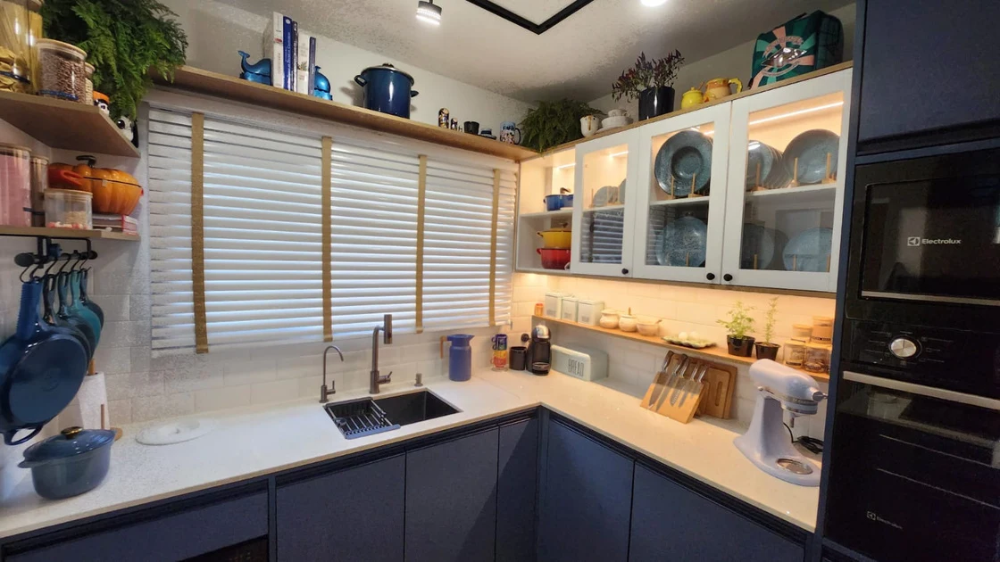
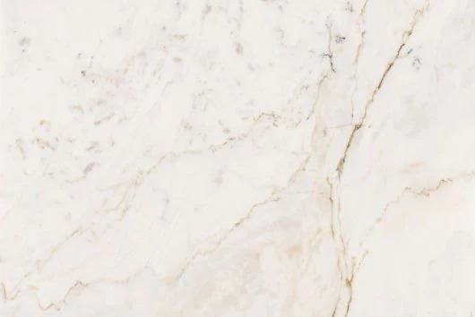
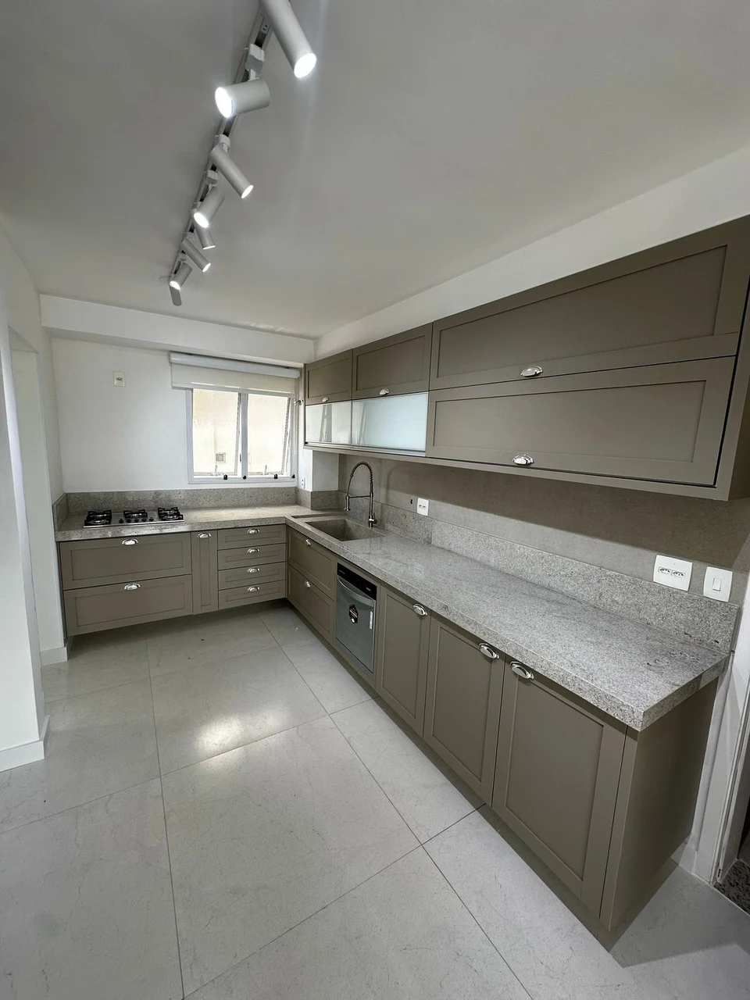
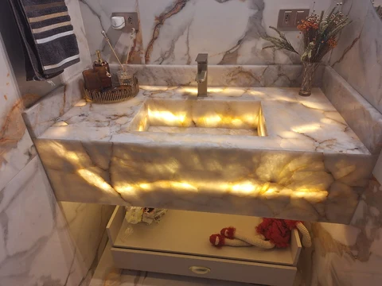

Artur Nogueira · SP
Transformando
pedra em arte.
Mármores e granitos nacionais e importados em Artur Nogueira. Atendimento próximo para dar forma ao seu projeto, do clássico ao moderno.
Da chapa ao ambiente.
Explore nosso estúdio 3D ↗


Escolha com calma.
Imagine as possibilidades.
A essência da Kairós
Cada projeto tem uma história.
A nossa começa com você.
Escolher a pedra é escolher uma parte do seu dia a dia. Por isso, nosso atendimento começa entendendo suas ideias, o ambiente e o resultado que você deseja.
Oferecemos soluções em mármores e granitos para construção, reforma e decoração, em projetos residenciais e comerciais.
Conheça a Kairós e fale com a equipe ↗Orientação para escolher o material para o seu ambiente.
Mármores, granitos, quartzos, Prime e ônix para conhecer.
Soluções para construção, reforma e decoração.
Cores, veios & possibilidades
A beleza está
na escolha.
36 materiais para você conhecer.
Uma seleção do nosso catálogo para começar.
Do detalhe ao ambiente
Inspiração para
viver bem.
Cozinhas, lavatórios, escadas e nichos.
Descubra as referências do catálogo.

COZINHASBeleza que acompanha a rotina.↗
LAVATÓRIOSUm cuidado em cada detalhe.↗Explore formas, iluminação e acabamentos no estúdio interativo.
Sua ideia é o primeiro passo
Vamos transformar
o seu ambiente?
Comece seu orçamento: envie as medidas, uma foto do ambiente ou uma referência pelo WhatsApp.
Conversar pelo WhatsApp ↗Visite a Kairós
Artur Nogueira – SPRua Professor Luiz Carlos Canella, 642
Parque das PalmeirasVer localização e contatos ↗Baixar catálogo completo ↓
O catálogo Kairós
Encontre a
sua pedra.
Explore cores e texturas. Selecione uma amostra para ver de perto e conversar sobre seu projeto.
Baixar catálogo completoNenhum material encontrado.
Experimente outro nome ou veja todas as categorias.
Ambientes & possibilidades
Ideias para
seu ambiente.
Uma seleção de ambientes apresentados no catálogo. Explore os detalhes e encontre inspiração para sua próxima obra.
Conheça nosso InstagramDa pedra ao ambiente
Imagine em 3D.
Explore a forma, a luz e os acabamentos. Escolha uma cena e gire para descobrir cada detalhe.
Ver materiais do catálogo ↗Simulação ilustrativa de formas e acabamentos. As amostras reais estão na área Materiais.
Escolha uma cena para explorar.
Muito prazer, somos a Kairós
Vamos criar
juntos?
Em Artur Nogueira, unimos a beleza dos materiais a um atendimento próximo. Ajudamos você a escolher a pedra para construir, reformar e transformar seu ambiente.
O cuidado Kairós em cada projeto
Uma escolha acompanhada.Atendimento personalizado para entender suas ideias.
Do clássico ao moderno.Mármores e granitos nacionais e importados, além das superfícies do nosso catálogo.
Atenção aos detalhes.Soluções para projetos residenciais e comerciais.
Vamos conversar
O primeiro passo
é a sua ideia.
Envie as medidas, uma referência ou conte o que você imagina. Vamos conversar sobre as possibilidades.
Solicitar orçamento no WhatsApp- VISITE A KAIRÓS
- Rua Professor Luiz Carlos Canella, 642
Parque das Palmeiras · Artur Nogueira – SP
Como chegar ↗ - @marmorariakairosarturnogueira ↗